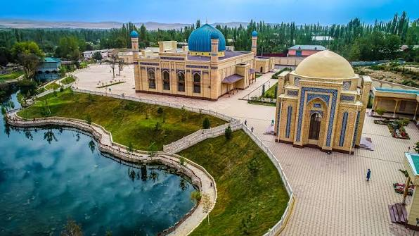

Namangan is the second-most populous city in Uzbekistan and the administrative, economic, and cultural center of the Namangan Region. Located in the northern part of the Fergana Valley, it lies approximately 300 km east of Tashkent along the banks of the Syr Darya River. Key Information 1. History & Heritage Origins: The name Namangan originates from the Persian Naman Kanan ("Salt Mine"), referencing the local salt mines that existed in the area. It grew significantly in the 15th century as a settlement for inhabitants from the nearby ancient city of Aksikent after it was destroyed by an earthquake. Islamic Learning & Craft Hub: By the 18th and 19th centuries, Namangan had established itself as an important religious center within the Kokand Khanate, famous for its madrasahs, mosques, and skilled craftspeople. 2. Geography & Environment Location: Positioned in the northern Fergana Valley near the foothills of the Chatkal mountain range, close to the Kyrgyz border. The "City of Flowers": Namangan is widely known across Uzbekistan as the "City of Flowers" (Gullar shahri) due to its lush public parks, flower cultivation, and the famous annual International Flower Festival hosted every spring. 3. Economy & Industry Light Industry & Textiles: Namangan is one of Uzbekistan's chief industrial hubs, specializing in textile manufacturing, silk processing, and garment production. Agriculture & Horticulture: The surrounding agricultural areas are heavily irrigated and famous for fruit orchards (especially apples, peaches, and grapes), cotton, and vegetable production. 4. Notable Sights & Attractions Mullah Kyrgyz Madrasah: Built in 1910, this striking historical madrasah features intricate brickwork and unique architectural design from the late Kokand era. Babur Park (Zahir-ud-Din Muhammad Babur Park): A sprawling green space in the city center that serves as the main venue for the annual Flower Festival, filled with vibrant floral displays, fountains, and shade trees. Aksikent Archaeological Site (~25 km away): The ruins of the ancient capital of the Fergana Valley dating back to the 3rd century BCE, offering insight into the region's ancient urban history before its destruction in 1620. Chortoq Thermal Springs: Located nearby, this popular spa and resort area is famous across Central Asia for its natural mineral waters and sanatoriums.